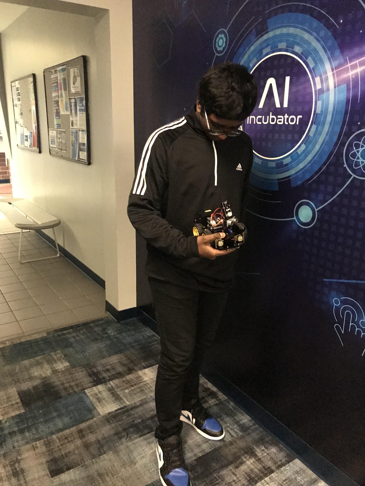

About Me
I go to Mcarthur High I am in TRIO UPWARD BOUND. I am 15 and im in 10th grade. My hobby's are playing video Games and playing sports(soccer)
TRIO summer 2024 summer classes
Projects
ASL Project
Here is my video for ASL
Robotics
here is pictures for Robotics
My TRIO 2024 Experience
For me this TRIO summer 2024 experience was actually fun mostly because we had alot of fun stuff to do. My favorite class is most likely be Robotics because we did a lot fun stuff inside the class plus the class did not any type of hard work. My favorite type of cultural experience most likely be rapids water park mostly because we went on a lot of slides and had a lot of fun. Maybe we bullied our friends bc they were scared to go on some slides